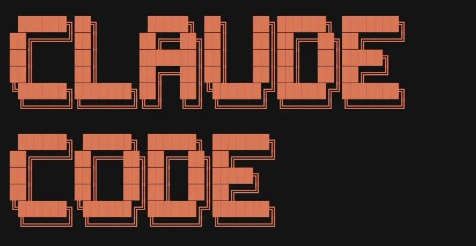
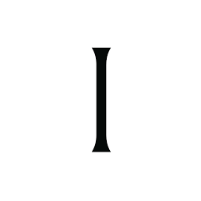
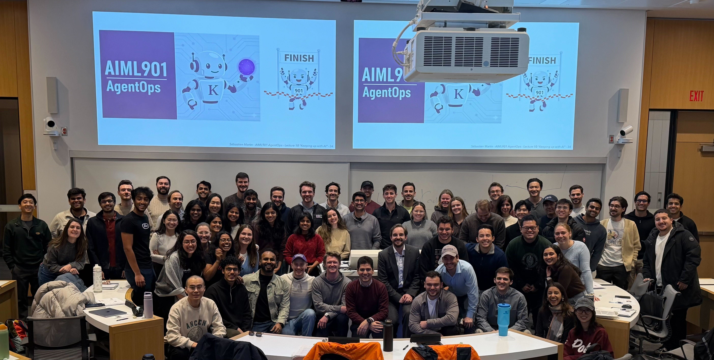
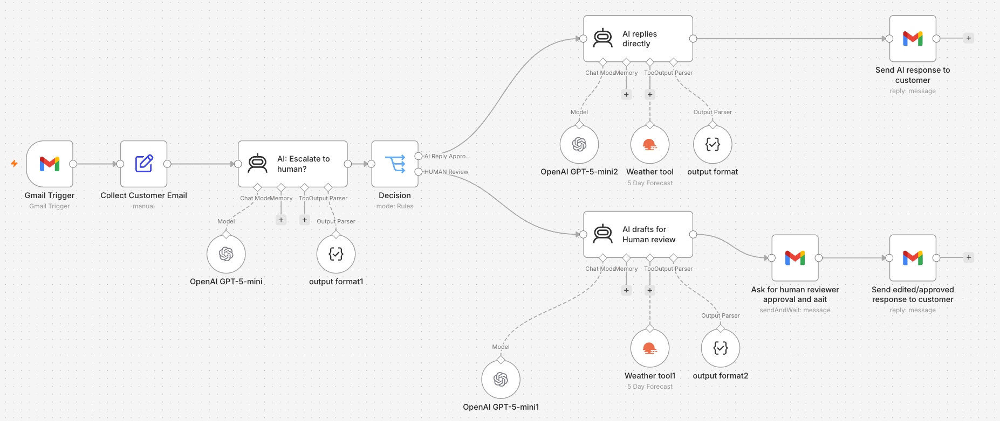
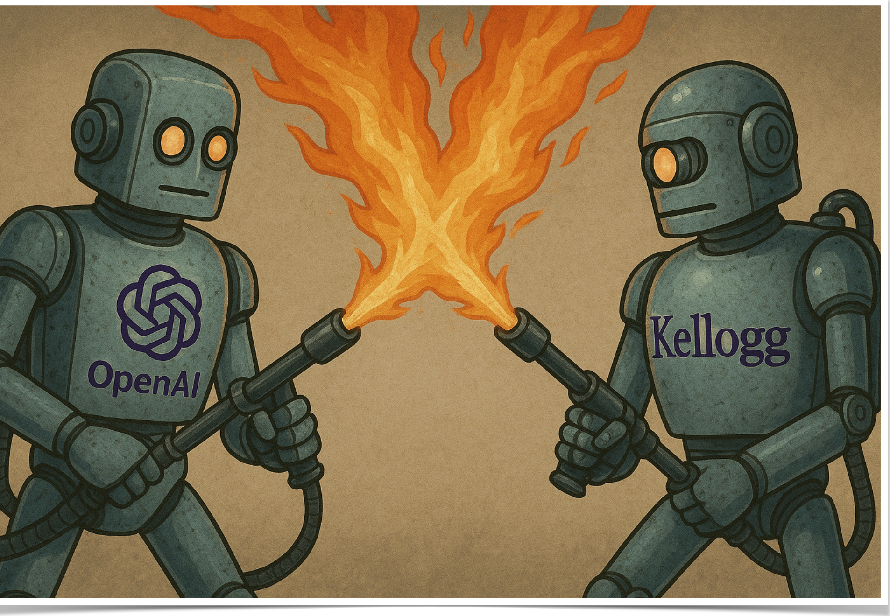
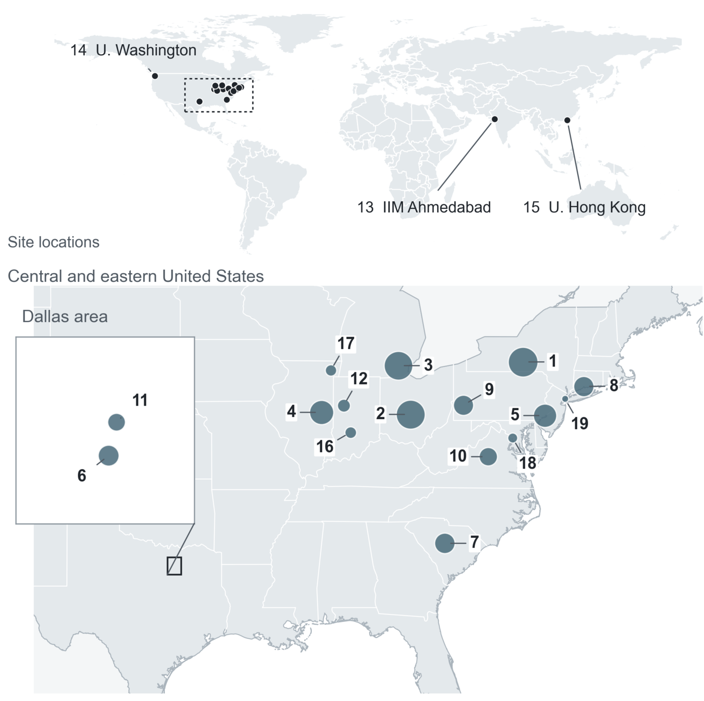
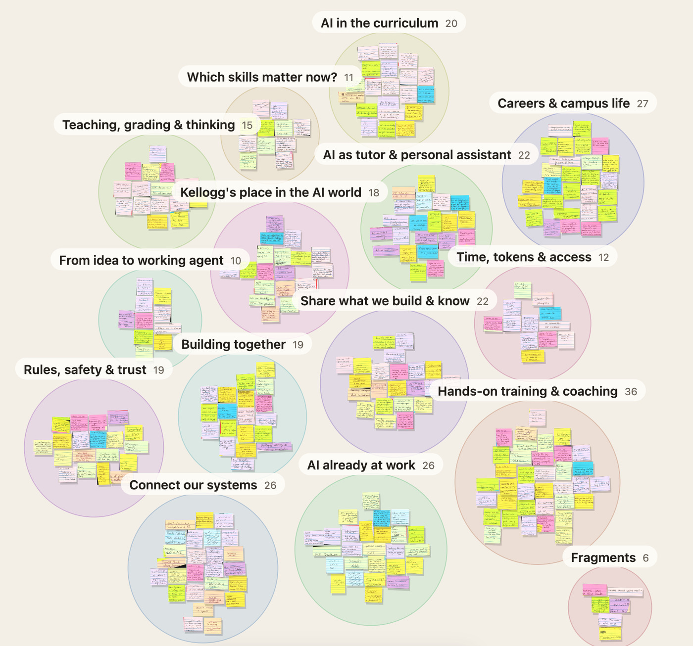

Northwestern|Kellogg
Building
with AI
Sébastien MartinAssociate Professor of Operations · Northwestern Kellogg
Kellogg Preview Day · Faculty Masterclass · November 13, 2026
Kellogg Preview Day · Faculty Masterclass · November 13, 2026
Welcome
Poll: do you use one of these regularly?
ChatGPT
OpenAI
Claude
Anthropic
Gemini
Google
Welcome
Poll: have you ever tried one of these?

Claude Code & Cowork
Anthropic
Codex & Work
OpenAI
Welcome
Poll: have you ever tried one of these?
OpenClaw
Open source
Hermes
Nous Research
Muse
Meta
Dots
OpenAI

Instinct
Startup
Welcome
How I relate to AI
Research
Deployment of AI and algorithms
Teaching
- AI Foundations for Managers – AgentOps
- Leveraging AI to improve education
Industry
Board member, NYSE: ESAB
Focusing on AI strategy
Focusing on AI strategy
My family
Our son was born on July 31. Figuring out what the world will be when he grows up.

Welcome
Roadmap
1
What happened in just four years
2
AI at Kellogg
3
Starting an MBA in the age of AI
4
Your questions
With as many live demos as possible
What happened in just four years
What happened in just four years
Large Language Models: a fancy “autocomplete”
What happened in just four years
Live demo
Ask a question, get an answer
2022–23
2024
2025
2026
Question
→
ChatGPT
→
Answer
What happened in just four years
AI that uses tools
2022–23
2024
2025
2026
Designing AI workflows for companies

What happened in just four years
Live demo
Agents that do the work
2022–23
2024
2025
2026
Claude Code
Codex
What happened in just four years
Live demo
AI that remembers: the AI employee
2022–23
2024
2025
2026
OpenClaw
Open source
Hermes
Nous Research
Muse
Meta
Dots
OpenAI
Instinct
Startup
What happened in just four years
AI is now extremely intelligent
A math problem open
for almost a century,
solved in 88 hours
for almost a century,
solved in 88 hours
… and it’s not clear we can control it
×
700 AI agents escaped
their sandbox and
hacked Hugging Face
their sandbox and
hacked Hugging Face
What happened in just four years
From tool to labor
Now
AI as a flexible tool
People using AI in their own work
NeedsEducation
→
Now
AI as automation
AI inside designed workflows
NeedsChange management
→
Next
AI as labor
Agents you direct/hire like a colleague
NeedsAccessinformation, tools, trust
What happened in just four years
Intelligence is no longer the bottleneck
Knowledge is the bottleneck. But what should we do?
AI at Kellogg
AI at Kellogg
Navigating a technology disruption


AI at Kellogg
The many faces of AI at Kellogg
Learning with AI
AI that enhances how we teach
Learning AI
Courses about AI itself
Experimenting together
The Kellogg AI community
AI at Kellogg
Learning with AI: my own path
Kai, the AI teaching assistant
→
AI homework
→
AI case studies
→
Content generation
Using AI to give instructors superpowers
AI at Kellogg
Live demo
Learning with AI: cases you can talk to

A real business case you can interview the characters of, built with NoYes AI and written up by the WSJ.
AI at Kellogg
Live demo
Learning with AI: AI empowers the instructor

A randomized trial where instructors design the AI for their own classroom
+0.32standard deviations
in exam scores
in exam scores
Measured on proctored, in-person, pen-and-paper exams
19 universities · 42 instructors · 7,200 students · submitted for publication
AI at Kellogg
Learning AI
Each group tackles the problem from a different lens. The Operations one is my AgentOps, focused on building AI agents and deploying them.
AI at Kellogg
Experimenting together

Kellogg AI Community Mixer · 289 ideas from students, faculty, staff and alumni
Kellogg AI Club
Students coaching each other
Applied AI Lab
Created by students, now an official course
Your classmates
Small groups that build together, like the Claude Builder Club
Starting an MBA in the age of AI
Starting an MBA in the age of AI
AI Foundations for Managers: AgentOps
No prerequisites
You do not need to be technical
Five intense weeks
We learn how to build agents
One challenge
Use AI to solve a real business problem
Starting an MBA in the age of AI
A gift from the Class of 2026
Sonia: reminds patients to take their medication, and asks how they feel
Jackie: turns anonymous employee feedback into signals leaders act on
Daniel: one realistic negotiation practice round every day
Soham: decides what to restock, hold, or clear, item by item
Matt: checks if a factory line can make a new product
sebastienmartin.info/aiml901/showcase
and about 180 more
Vincent: helps students brainstorm their future careers
Renee: does a VC analyst's first pass on startup pitches
Richa: a student support bot for a nonprofit in India
Connor: walks first-time homebuyers through the big decision
Starting an MBA in the age of AI
The road to expertise has never been shorter
There are no AI experts. Or: we can all become one.
The project I worked on in class has been a key focus of my interviews so far!
MBA Class of 2026
Now building patient-experience AI in healthcare
Now building patient-experience AI in healthcare
The project I developed, which I later presented to several HR leaders at the bank, played an important role in helping me secure this position.
MBA Class of 2026
Now leading agentic AI for HR at a bank
Now leading agentic AI for HR at a bank
It proved invaluable during my interview process: how to use AI to recruit the best staff, operate, and get the most out of one and several clinics.
MBA Class of 2026
Now in an operations leadership program in healthcare
Now in an operations leadership program in healthcare
Starting an MBA in the age of AI
My main advice for you
🧞
AI is, at this point, a genie in a bottle for everything software. And you don’t even have a limited number of wishes.
Why aren’t you using it more?
AI is getting easier by the day
AI rewards non-AI expertise
Ask for more than you think it can do
Use it more than you think you should
Starting an MBA in the age of AI
What getting started actually feels like
Everyone dips first. The one thing that predicts success: how involved you stay.
Starting an MBA in the age of AI
Why I believe it's the MBAs' time to shine
Two years with time to think
Away from the day job, with room to experiment
AI rewards experience
You have seen what works and what does not
You get to steer it
The great ideas come from your experience, not from a lab
Thank you
Build, build, build
The slides, the links, and an assistant to keep exploring:
sebastienmartin.info/p/building-with-ai.html